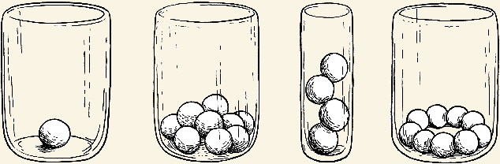

Twelvefold Way is a series of twelve formulas relating to two finite sets in Combinatorics. Each formula is set with different constraints and configurations. The best ways to understand how each formula contains a certain number of configurations are through the balls-and-bins and stars-and-bars models.
